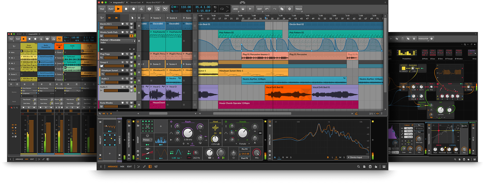
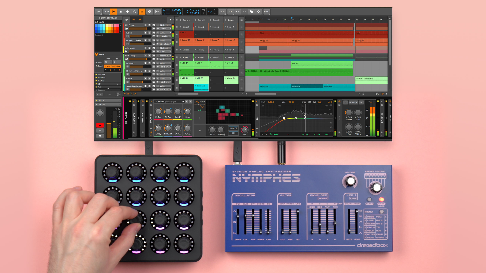

Bitwig Studio
Modern music production and performance for Windows, macOS, and Linux.
- Linear and non-linear workflows for sound design, recording, live performance, and beyond
- A complete package with 90+ instruments, effects, and other creative tools
- Modular structure and flexibility in all aspects of the software
- Enjoy over 10 GB (and counting) of world-class sound content from Bitwig and selected partners
Bitwig Studio is the single solution for realizing any musical idea across every stage of production.
All The Creative Tools
Built on modern foundations, Bitwig Studio offers everything you can expect from a contemporary music creation system. And then some.
Modulation Heaven
The modulation system in Bitwig Studio allows you to use Macro controls, Note Expressions, LFOs, and Envelopes to modulate any device, VST plug-in, or hardware parameter. With 30+ modulators (and counting) the potential for creative expression is endless.
Hardware Integration
Hardware integration is a large part of what makes Bitwig Studio unique. MIDI handling, note timing, and latency compensation are aspects of this. Other prominent features include MIDI Clock Sync and Ableton LINK. But where Bitwig Studio really stands out is our collection of hardware integration devices.
